100% Achievement Guide
[[1]] The achievements and the tasks required to complete them will be organized into different sections based on the context in which they can be completed - there will be spoilers, particularly in the Questlines section, so beware!
Starting Out
| Icon | Name | Description |
|---|---|---|
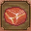 |
First slice | While performing an Autopsy on a corpse for the first time during the tutorial, you are tasked with surgically removing Flesh. |
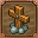 |
Novice gravedigger | Bury your first body. Accomplished during the tutorial portion of the game. |
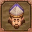 |
Sweetheart Bishop | Meet the Bishop, who you find during the tutorial portion at the start of the game. |
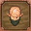 |
Shady Snake | Meet Snake. When you first enter your cellar, a cutscene will play that shows Snake standing at the gate to the dungeon area. In order to reach him, you'll need to clear out the blockage, which costs 10× Wood wedge, 2× Wooden plank, and 4× Simple iron parts. |
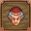 |
Holy Inquisition | Meet the Inquisitor. You can find him at Witch Hill during the day on . |
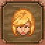 |
Charm itself | Meet Ms. Charm. She performs at The Dead Horse during the day on . |
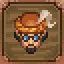 |
Wealthy merchant | Meet the Merchant. He stands in front of the barn just southwest of The Dead Horse during the day on . |
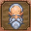 |
Old Astrologer | Meet the Astrologer. He can be found far east of the Village in front of the Lighthouse on . |
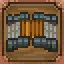 |
Bridge builder | Fix the bridge along the road west of the Graveyard. It'll cost 1× Wooden plank, 4× Flitch, and 8× Nails. |


Graveyard
| Icon | Name | Description |
|---|---|---|
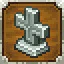 |
Advanced gravedigger | Bury 10 bodies. Cremations do not count. |
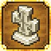 |
Shovel master | Bury 50 bodies. Cremations do not count. Exhuming bodies and reusing graves does count. |
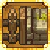 |
Stone fence | Build the stone fence around the graveyard. At some point during the Bishop's questline, you will unlock the recipe to upgrade the fence at the Graveyard blueprint table. It costs 24× A polished brick of stone, 2× A carved piece of stone, and 12× Complex iron parts. |


Questlines
This section contains spoilers.
| Icon | Name | Description |
|---|---|---|
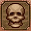 |
A perfect gift | During the Astrologer's questline, he will ask you to retrieve a Skull. This can be obtained by extracting it from a corpse. |
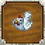 |
Summon a chicken | After providing Snake with 5× Bloody nails from Iron Maidens and 1× Bucket of blood from the chest at the end of Dungeon level 5, he will perform the ritual unsuccessfully, instead summoning a chicken. |
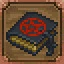 |
A book with funny pictures | After Snake fails the summoning ritual, he will ask you to get the Necronomicon. Speak to the Astrologer, who will send you to the Lighthouse Keeper beside him. Exchange 5 Maggots for the Necronomicon, then return to Snake. |
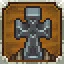 |
His house | During the bishop's questline, after giving him the 20× Ceramic bowls, he will ask that you improve the graveyard to 30 Quality fish fillet (basic quality works fine) and purchase a Building permission from royal services for Building permission to get this achievement. |
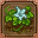 |
Even here | Fix the Garden. Interact with the broken blueprint desk to start a quest to gain rights to the property. Speak with Horadric and he will grant you the Garden certificate, which can then be turned in back at the blueprint desk. |
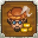 |
Graveyard Veggies | After obtaining the Garden certificate, bringing the merchant 12× Carrot, 12× Cabbage, and 12× Beet, paying back the Hiccup grass, and giving him Spices (made from Salt and Health solution, you will need to make 5× Dinner. The simplest combination for the dinners ### Someone please edit this; Onion rings gold (from Tavern/Horadric) and fish filet (gold (from merchant) ~DutchEmerald ### is |
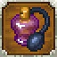 |
Perfume | Give Perfume to Ms. Charm. During Ms. Charm's questline, she will ask you to obtain Perfume from Miss Chain, who requests that you bring Basket of food to Clotho, the witch in the Swamp. She also requests that you bring back 12× Frog, which you can fish up in the Swamp or purchase from Clotho. After giving Miss Chain the frogs, she will give you the Perfume. Turning this in with Ms. Charm will earn you this achievement. |
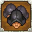 |
Night watch | Get the Inquisitor to 60 |
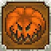 |
Simple but stylish | Decorate the Dark Shrine to 20 using the Dark design desk. This will require a significant number of resources, as every decoration is mandatory. Total resources required: 24× Skull 8× Wooden beam, 4× Pumpkin 10× A polished brick of stone 10× Polishing paste 2× Stone repair kit 20× Blood (for filling the Blood fountains). |
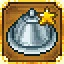 |
Dream dinner | Made as part of the achievement "Graveyard Veggies" during the Merchant questline. |
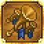 |
On every shelf | Raise the trade company's Fame to 5. This can be accomplished by turning in 10× Flyer for 1 Fame, which can be repeated indefinitely, and my getting Ms. Charm to advertise your business. |
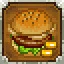 |
Not a hot dog | Serve 5× Burger and 10× A mug of beer at a witch burning. The Burger will require Onion, and the A mug of beer will require Hops among the rest of the ingredients. These can be grown by taking their respective Quality fertilizer II. Turn these in at the repaired tent at Witch Hill and be sure to serve them on during the day. |
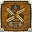 |
The Mill | During Ms. Charm's questline, she will ask you to get permission to bring Alisa to the king's palace. Speak to the Farmer, who will refuse. His son will then tell you that if you repair the windmill, you'll be able to convince the Farmer to grant his permission. Speak to the Miller, who will give you instructions for repairing the mill, but the calculations need to be translated. Bring the instructions to the Astrologer (60 Paper with calculations. Return to the mill with 5× Complex iron parts, 6× Wooden plank, and the Paper with calculations to earn this achievement. |
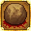 |
Side quest | During Snake's questline, he will inform you that a Vampire hunter is looking for him. Meet Snake just south of the Vineyard on Witch Hill with 1× Wooden plank. Time will fast forward for a bit, and you will need to push the boulder to crush the hunter. After Snake leaves, mine the boulder to obtain a corpse and the medallion that will later unlock Dungeon floors 11-15. |
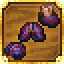 |
Match 3 | Collect three dark organs. Dark organ extraction is unlocked when the Inquisitor asks you to obtain some for him to prove to the king that the witch burning must continue. All future corpses will now have a moderate chance to have either a Dark heart, Dark intestine, or Dark brain. You will need one of each to give to the Inquisitor. Interestingly, the image for the achievement suggests that lungs would have originally been an important part, but were removed in favor of intestines. |
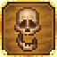 |
He trusted you... | HIGHLY MISSABLE! When the Inquisitor asks you about any other proof of witchcraft, you will have the option to either bring up Snake's ritual or Gerry, the talking skull. To get this achievement, you need to select the option that sells out Gerry first, but the Inquisitor will dismiss this option. Choosing the ritual option first will prevent you from choosing the second option, forcing you to either reload the last save or replay the game! |
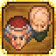 |
A father and a son | Complete the final task of Snake's ritual by giving him a Dark heart. He will then perform the ritual for the last time, bringing his and the Inquisitor's questlines to a close. |
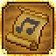 |
Ideal song | During Ms. Charm's questline, you will ask Vagner for a song to give to Ms. Charm. He asks you for Infusion, which can be made by distilling 1× Booze and 3× Red mushroom. After giving Vagner the Infusion, return the next day to find a note from Vagner. At night, head to the cliffs just north of the beach where a cutscene will play, in which you receive the Ideal song and earn the achievement. |
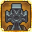 |
His mansion | To upgrade the Church to a Cathedral, you will need 200 A carved piece of marble, which will require Iron chisel, or Iron chisel with technology boosts. |
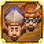 |
Two brothers | After upgrading the Church and finishing the Merchant questline up to the point where the Merchant needs to attend a ceremony for his new position, try to get the Accepted invitation from the Inquisitor, who will refuse. Then talk to the Merchant, who will agree to go. On Accepted invitation. Then speak to him again to initiate a cutscene, after which you will have this achievement. |
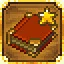 |
Best seller | During the Ms. Charm and Astrologer combined questline, you will need to provide the Astrologer with a Book. These can be made by combining a Hard cover and a Chapter, the quality depending on your available technology boosts. You will likely need at least Hard cover and Chapter. After giving the Astrologer the Book, you will need to talk to him again the following week, where he will ask you now for a Book. This will most likely need Hard cover and Chapter, as well as some luck to ensure that the book actually comes out Book will earn you this achievement. (It should be noted that in the latest build of the game, if you give the Astrologer the Research Obsidian paper instead of a Book, he will not request a Book the next time you meet with him. Instead, he'll ask for the Aristocrat papers, essentially skipping the step. This will make this achievement impossible to earn unless you reload a saved-game.) |
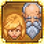 |
Prodigal father | After providing the Astrologer with the Book and waiting a week, you will be able to begin the excavation from his dialog. A cutscene will play and at the end you will have this achievement. |
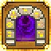 |
Back home | Upon completing the questlines required for "A father and a son", "Two brothers", and "Prodigal father", you will have the 6 items required to open the portal at Witch Hill (the Salty Fork, the Mirror of Pride, the Endless Notebook, the Eternal Burning Coal, the Golden Angle, and the Necklace). Craft the parts in front of the portal and a cutscene will play, after which you will earn this achievement. |
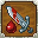 |
Exterminate | ATTENTION: Really highly missable! It also requires the DCL: Game of Crone.
All the ambushes have been cleared out. The Terminator and Rambo would have been proud. After swamp-scene you get attacked by a golem. Go and find the other 3 ones on following locations:
If you build the watchtower, you are rip. In other words, if you complete the watchtower before killing all of them, then you will have to reload or replay to get the others. |


Crafting, Cooking, Farming
| Icon | Name | Description |
|---|---|---|
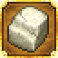 |
Marble | The Marble quarry can be found after repairing the bridge over the river and removing the blockage at the end of the road to the north. Repairing it requires 16× Flitch, 4× Simple iron parts, and 7× Nails. If you run out of energy while building, you can enter the cabin and sleep to recover. |
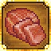 |
Sashimi master | Remove 30× Flesh from corpses. Slicing the meat isn't needed for this achievement, just the extraction. |
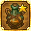 |
Winemaker | Can be made by turning 30× Grapes (grown using the Vineyard and Grape seed with Quality fertilizer II or simply using Grape seed) into 2× Pail of grape juice, then fermenting in the Wine barrel. If you do not have the perk to improve the quality of your wines, you will have a 50% chance of ending up with Red wine instead, so save beforehand or make extras. |
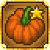 |
Golden pumpkin | Pumpkin can be grown by combining Pumpkin seed with Quality fertilizer II or by planting Pumpkin seed. Harvesting the resulting Pumpkin will unlock this achievement. |
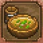 |
Kitchen boy | Cook 10 different items from the Cooking list. If you find you're short on things to cook, be sure to purchase the recipes from Miss Chain. |
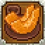 |
Cook | Cook 20 different items from the Cooking list. If you find you're short on things to cook, be sure to purchase the recipes from Miss Chain. |
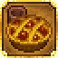 |
Chef | Cook 30 different items from the Cooking list. If you find you're short on things to cook, be sure to purchase the recipes from Miss Chain. |
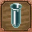 |
Apprentice | Discover 5 alchemy recipes by combining Alchemy ingredients from either the Alchemy workbench (tier I) list or the Alchemy workbench (tier II) list. Alternate recipes for the same component do not count. |
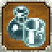 |
Alchemist | Discover 10 alchemy recipes by combining Alchemy ingredients from either the Alchemy workbench (tier I) list or the Alchemy workbench (tier II) list. Alternate recipes for the same component do not count. |
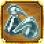 |
Master alchemist | Discover 20 alchemy recipes by combining Alchemy ingredients from either the Alchemy workbench (tier I) list or the Alchemy workbench (tier II) list. Alternate recipes for the same component do not count. |


Fishing
| Icon | Name | Description |
|---|---|---|
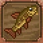 |
A fish a day! | Can be simply obtained by discovering all fishes in each fishing spot. Fish discovered in multiple locations only count once, and be sure to upgrade your fishing rod. |
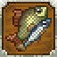 |
Fish collector | Can be simply obtained by discovering all fishes in each fishing spot. Fish discovered in multiple locations only count once, and be sure to upgrade your fishing rod. |
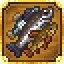 |
Ichthyologist | Can be simply obtained by discovering all fishes in each fishing spot. Fish discovered in multiple locations only count once, and be sure to upgrade your fishing rod. |
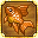 |
Gold fish | Catch a Goldfish. They can be caught in the Sea fishing spot. You will need to cast at the furthest range with an Excellent fishing rod and a Lure with a gem. The goldfish has a 5% chance of being hooked at night, and a 2% chance during the day, so be sure to bring extra lures and focus on fishing during the night. |
| Brutal fisherman | Catch 200 fish. A lot of progress for this achievement can be made after achieving "A fish a day," "Fish collector," "Ichthyologist," and "Gold fish." For the rest, pick a convenient fishing spot and go for the nearest cast with no bait. It will take a while, but should be relatively mindless. |


Points
| Icon | Name | Description |
|---|---|---|
| Just red points | Collect 1000 red points. These are obtained from activities such as smithing, woodworking, and studying related materials and tools. You can also purchase Book (r) for Great book (r) for | |
| Just green points | Collect 1000 green points. These are obtained from activities such as farming, gathering, and studying related materials. You can also purchase Book (g) for Great book (g) for | |
| Just blue points | Collect 1000 blue points. These are obtained from activities such as writing stories/notes/chapters/books, crafting grave decorations, crafting alchemy components, and studying related materials. You can also purchase Book (b) for Great book (b) for | |
| More red points! | Collect 3000 red points. These are obtained from activities such as smithing, woodworking, and studying related materials and tools. You can also purchase Book (r) for Great book (r) for | |
| More green points! | Collect 3000 green points. These are obtained from activities such as farming, gathering, and studying related materials. You can also purchase Book (g) for Great book (g) for | |
| More blue points! | Collect 3000 blue points. These are obtained from activities such as writing stories/notes/chapters/books, crafting grave decorations, crafting alchemy components, and studying related materials. You can also purchase Book (b) for Great book (b) for |


Dungeon
This section contain spoiler!
| Icon | Name | Description |
|---|---|---|
| Not far from the ground | Clear the 5th floor of the Dungeon. This achievement can be achieved while following Snake's questline. You can limit resources spent dungeon crawling by going in without any healing or energy consumables, and just return after dying (monsters that you kill will not respawn, so you can chip away at your dungeon progress). | |
| Scary dungeon depths | Clear the 10th floor of the Dungeon. This achievement can be achieved while following Snake's questline. You can limit resources spent dungeon crawling by going in without any healing or energy consumables, and just return after dying (monsters that you kill will not respawn, so you can chip away at your dungeon progress). | |
| Nothing underneath | Clear the 15th floor of the Dungeon. This achievement can be achieved while following Snake's questline (unless you purchased Golden apple from Clotho), and floors 11-15 can only be unlocked with a medallion dropped by the Vampire hunter during Snake's questline. You can limit resources spent dungeon crawling by going in without any healing or energy consumables, and just return after dying (monsters that you kill will not respawn, so you can chip away at your dungeon progress). |


Miscellaneous
| Icon | Name | Description |
|---|---|---|
| MacPlayer | Die 10 times. The easiest way to die repeatedly is to be killed by enemies in the Dungeon. Another way is to discard your armor and follow the path past the Apiary, where you will be attacked by Bats from evening until midnight. | |
| Tastes like home | Either buy Fish nuggets from Horadric for White fish fillet, 2× Oil, and 5× Fuel. Eat them to unlock this achievement. | |
| Health care | Drink 50× Heal potion. It does not matter if you craft them or purchase them. |